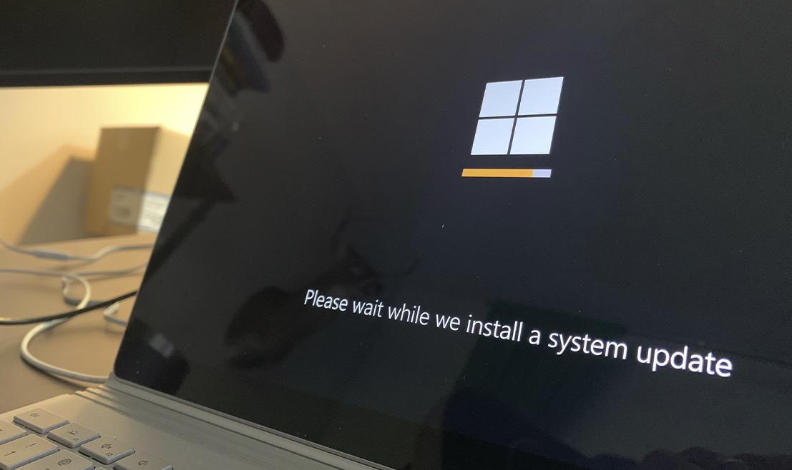
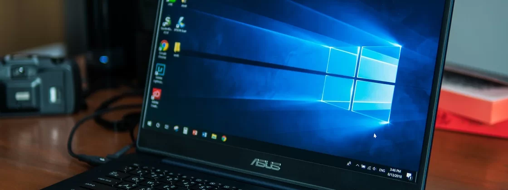

Exatamente um mês após seu lançamento oficial pela Microsoft, o Windows 10 versão 22H2 (ou atualização Windows 10 2022) foi marcado nesta terça-feira (22) como “para ampla implantação”, o que significa estar globalmente disponível através do Windows Update. De acordo com o Windows Health Dashboard, "se você tiver um dispositivo qualificado", basta selecionar "Verificar atualização".
Por enquanto, a Microsoft não detalhou quais serão as novidades que estarão incluídas na nova versão do Windows 10 e, provavelmente, não serão tão notáveis quanto as atualizações no Windows 11. De qualquer forma, a empresa continuará lançando updates para a antiga versão do sistema até o fim de 2025.

“O Windows 10 será atendido até 14 de outubro de 2025 e anunciamos que a próxima atualização de recursos do Windows 10, versão 22H2, chegará no próximo mês, continuando a oferecer suporte e opções com o Windows”, disse o vice-presidente de gerenciamento de programas para manutenção e entrega do Windows na Microsoft, John Cable.
Os consumidores que usam o Windows 10 e possuem dispositivos qualificados para o Windows 11 podem realizar a atualização do sistema a partir de hoje (20). já os computadores que não foram considerados qualificados no último ano continuam inelegíveis para a instalação.
